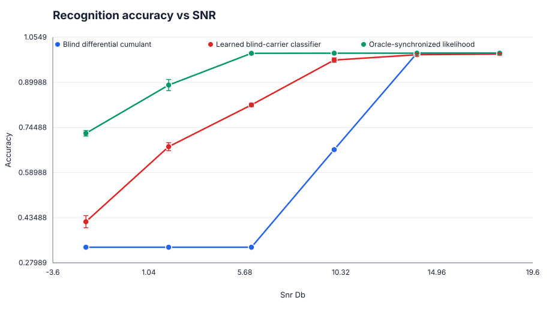
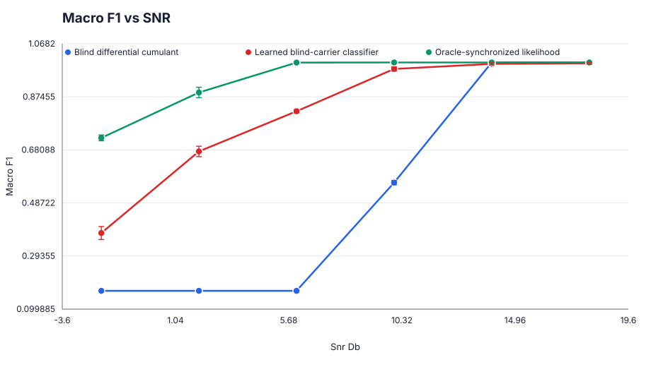

Blind differential cumulant
baseline18 stored runs · 18 recipe hashes
- Metrics
- See CSV
A blind differential-cumulant baseline and a returned learned I/Q-only classifier are compared under unknown per-frame carrier phase and residual frequency offset. An oracle-synchronized likelihood rule is retained as a diagnostic reference.
Research question: Can a researcher replace only the modulation-classifier block while preserving the waveform generator, carrier-impairment protocol, class vocabulary, and paired evaluation?
verification: warning · tier: experimental · publication ready: no
18 stored runs · 18 recipe hashes
18 stored runs · 18 recipe hashes
18 stored runs · 18 recipe hashes


Source result 20260727T150344Z_neural_receiver_ai_phy.learned_modulation_recognition_blind_carrier_post_training_v1
Portable benchmark definition SHA-256 e8c361ea1bfa6346cf52a0cb11a967c781dc63269827fbfc063838a76f766783
Publication SHA-256 967496121846c28e162fd7dc0b82ae1da2931fb54ab3e28c5db281ecfb7c2f88
demo data · admitted stored metrics · resource-exclusion ledger · verification report · file manifest